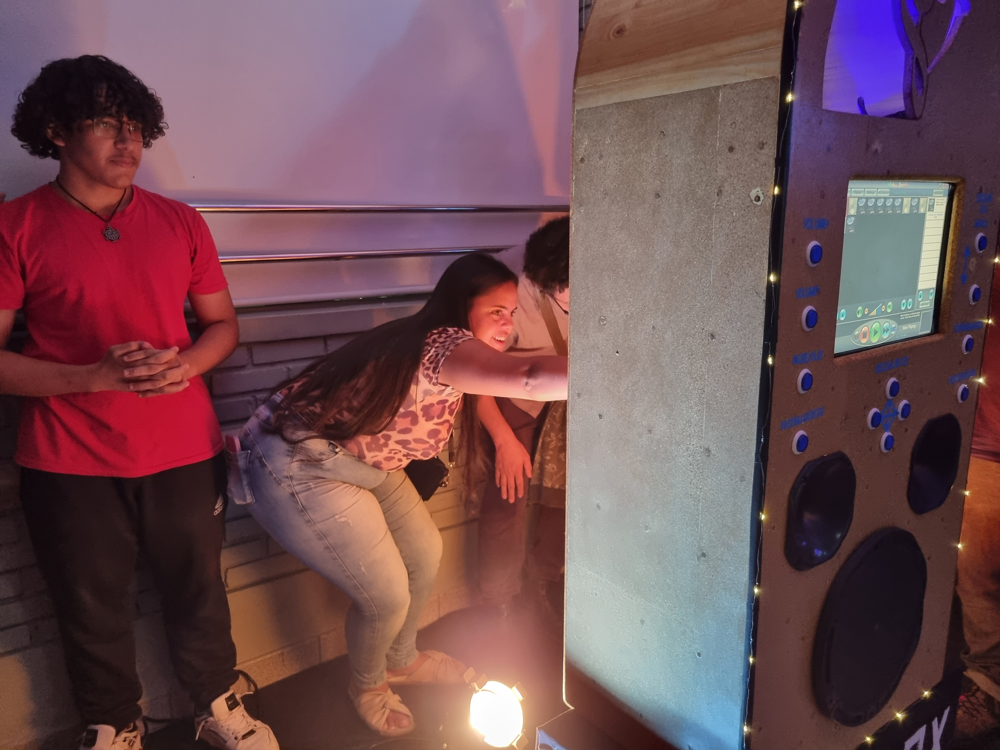
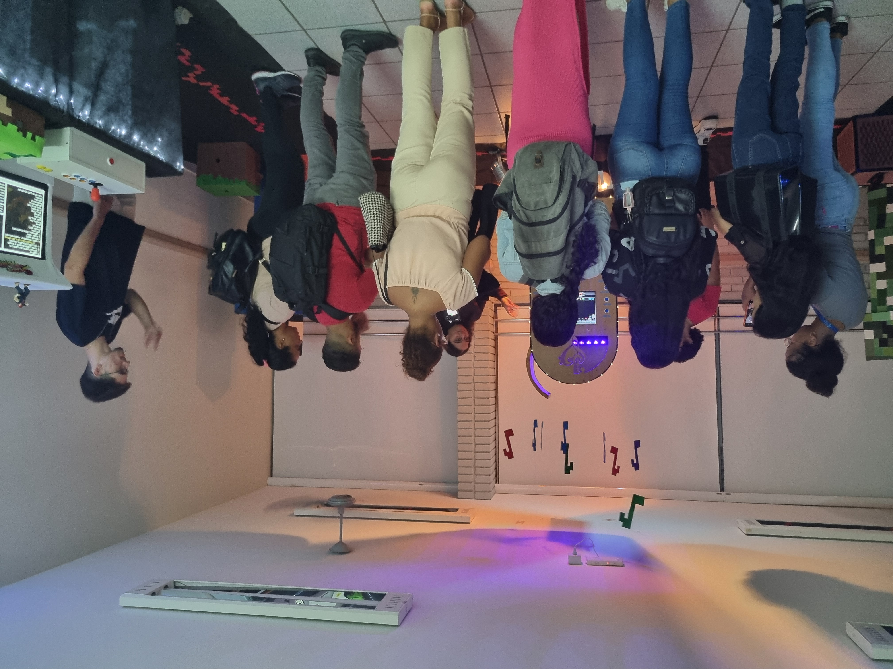
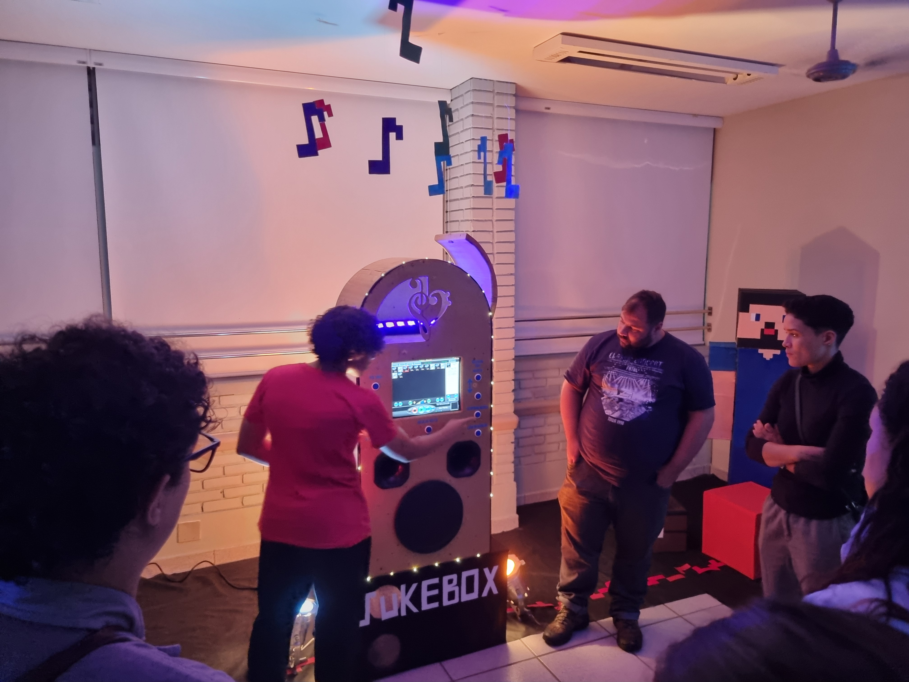
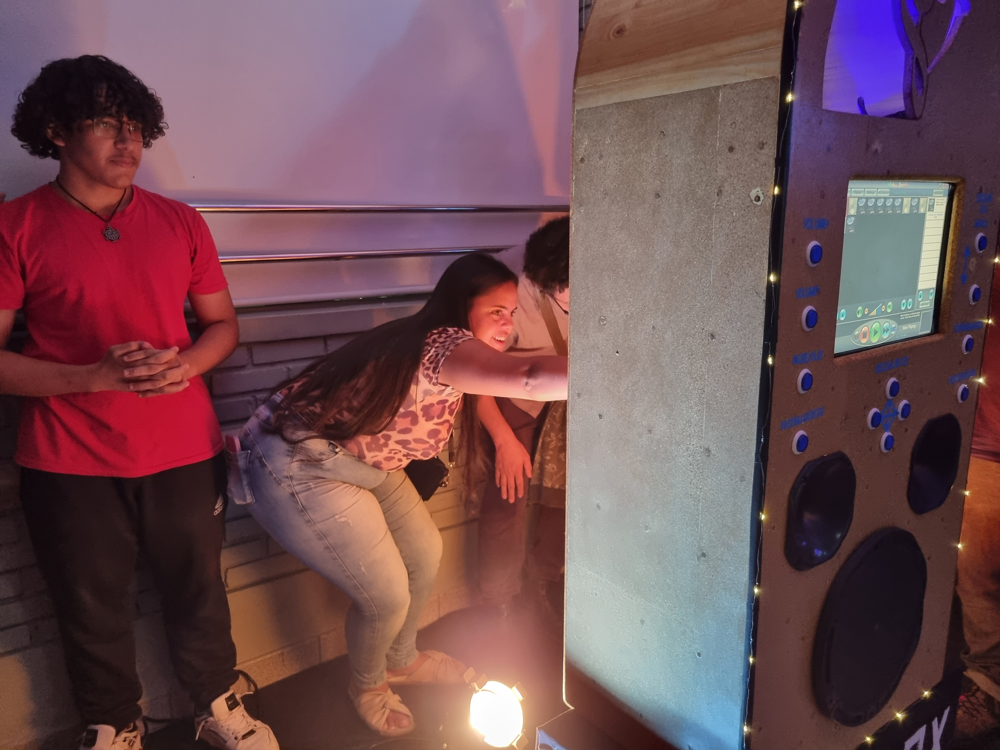
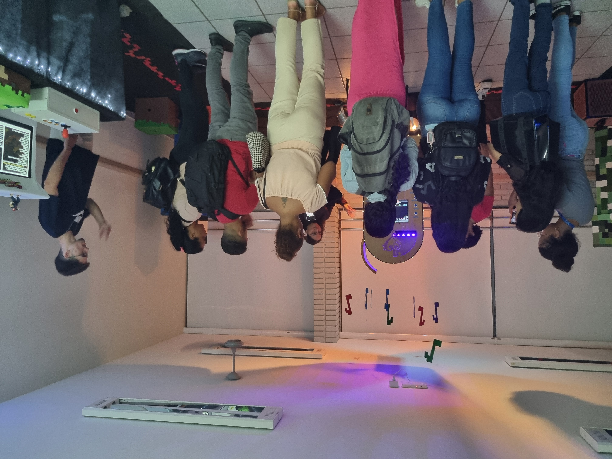
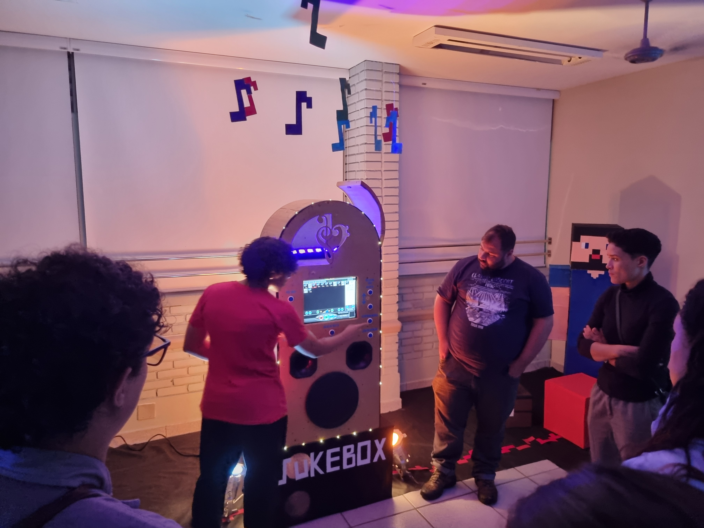

Projeto Integrador hardware e software
Projeto destinado a avaliar a conhecimento adquirido em sala nas matérias de hardware e software, objetivo criar um projeto integrado utilizando peças de computadores sem que seja um computador desktop.
Sala foi dividida em grupos onde o grupo decidiu criar um Jukebox utilizando hardware e software com infra estrutura de mateira reutilizada e sistema de áudio de um caixa de carro.


 




